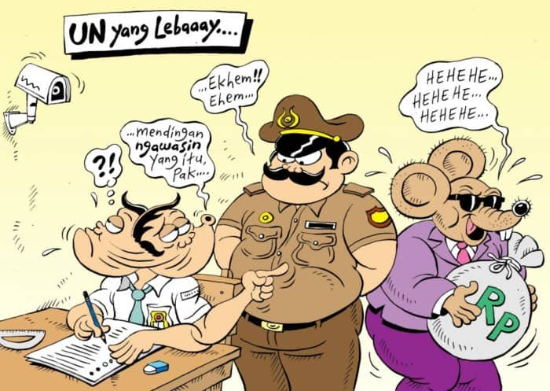

Teks Anekdot
Samuel Marcello Immanuel / X PPLG 1 / 33

Pengertian Teks Anekdot
Merujuk Kamus Besar Bahasa Indonesia (KBBI) anekdot adalah cerita singkat yang menarik karena lucu dan mengesankan. Umumnya, anekdot menceritakan orang penting atau terkenal berdasarkan kejadian sebenarnya.
Meski demikian, anekdot juga bisa merupakan cerita rekaan yang tidak harus didasarkan pada kenyataan yang terjadi di masyarakat.
Dengan kata lain, pengertian teks anekdot adalah cerita singkat yang menyentil atau mengandung kritikan tetapi dibungkus dengan bahasa atau cara penyampaian yang menarik, cerdas, dan memiliki kesan lucu.
Teks anekdot ini bukan sekadar humor atau lelucon. Lebih dari itu, teks anekdot memiliki makna tersirat sebagai kritik atau sindiran yang kerap terjadi dalam kehidupan sosial masyarakat, pendidikan, lingkungan, politik, dan sebagainya.
Tujuan Teks Anekdot
Setiap pembuatan tulisan atau teks pasti memiliki tujuan, begitupun dengan teks anekdot.
Berikut tiga tujuan dari anekdot:
- Sarana untuk membangkitkan tawa bagi pembacanya
- Sarana untuk hiburan
- Sarana untuk mengkritik
Struktur Teks Anekdot
Bagaikan sebuah bangunan, teks anekdot juga dibangun dari beberapa bagian. Bagian-bagian inilah yang membentuk teks anekdot secara utuh. Berikut struktur teks anekdot:
- Abstrak
- Orientasi
- Krisis
- Reaksi
- Koda
Bagian awal paragraf dari teks anekdot adalah abstrak. Bagian ini berfungsi untuk menggambarkan isi teks secara singkat. Abstrak dapat disebut sebagai tahap pembukaan.
Dengan membaca bagian abstrak beberapa detik saja, membantu pembaca untuk mengetahui arah teks yang penulis maksudkan.
Selanjutnya adalah bagian yang cukup krusial dalam sebuah teks anekdot, yaitu orientasi. Bagian orientasi menunjukkan awal kejadian cerita atau latar belakang peristiwa. Biasanya penulis menyampaikan dengan detail di bagian ini.
Orientasi memiliki peran penting sebagai penyebab dari timbulnya krisis, konflik, atau masalah utama pada teks anekdot.
Krisis atau komplikasi adalah bagian yang memunculkan suatu masalah unik atau tidak biasa yang terjadi.
Dikutip dari Modul Bahasa Indonesia SMA Kelas X tentang Struktur dan Kebahasaan Teks Anekdot, krisis dimaknai sebagai adanya ketidakpuasanatau kejanggalan.
Reaksi adalah bagian yang menggambarkan cara penulis atau tokoh yang diceritakan menyelesaikan masalah. Reaksi dapat berupa sikap mencela atau menertawakan. Bagian ini sering kali mengejutkan atau tidak terduga.
Koda merupakan bagian akhir cerita. Bagian ini berupa simpulan dari kejadian-kejadian yang dialami penulis atau orang yang ditulis di dalam teks.
Di dalamnya biasanya berisi komentar, persetujuan, atau penjelasan atas maksud dari cerita yang disampaikan. Bagian koda biasanya ditandai dengan kata-kata, seperti: itulah, akhirnya, demikianlah, memanglah. Namun, keberadaan koda pada teks anekdot bersifat opsional, bisa ada atau tidak.
Ciri-ciri Teks Anekdot
Lalu, bagaimana cara membedakan teks anekdot dengan teks-teks lainnya? Salah satu caranya adalah dengan mengetahui ciri-cirinya sebagai berikut, dikutip dari Buku CCM Cara Cepat Menguasai Bahasa Indonesia SMA dan MA.
- Teks anekdot bersifat humor atau lelucon. Artinya, teks anekdot berisi kisah-kisah lucu atau bualan
- Bersifat menggelitik. Artinya, teks anekdot akan membuat pembacanya merasa terhibur dengan kelucuan yang ada di dalam teks
- Bersifat menyindir (mengenai orang penting ataupun lembaga atau organisasi)
- Memiliki tujuan tertentu
- Kisah cerita yang disajikan hampir menyerupai dongeng
- Menceritakan tentang karakter hewan dan manusia sering terhubung secara umum dan realistis.
Contoh Video Teks Anekdot
Sumber : Kompas.com

Love in the Dark
Adele